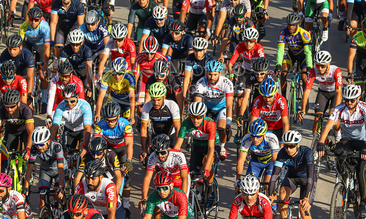

NUESTRA HISTORIA · SANTOS TRAILS
¿Qué es Santos Trails?
Santos Trails es un proyecto dedicado al ciclismo de montaña en la Zona de Los Santos, Costa Rica. Nace de la pasión por recorrer senderos, descubrir paisajes y compartir la emoción del MTB.
Un sueño que comenzó sobre ruedas.
Todo comenzó con un grupo de amigos ciclistas que acostumbraba salir a rodar en su tiempo libre. De esas experiencias nació la idea de organizar una pequeña recreativa para compartir su pasión con otros amantes del ciclismo.
Con esfuerzo, dedicación y el apoyo de la comunidad, aquel pequeño proyecto fue creciendo hasta convertirse en un evento de proyección internacional, que reúne cada año a participantes de diferentes partes del mundo.

Nuestra esencia
Conectar a los ciclistas con la naturaleza, los paisajes montañosos y los caminos rurales de la región, ofreciendo una forma diferente de descubrir y disfrutar la Zona de Los Santos sobre ruedas.
+800
Ciclistas participantes
Personas que forman parte de esta experiencia.
10 años
De historia MTB
Una trayectoria construida pedalada a pedalada.
+100 km
De aventura
Recorridos y caminos por descubrir y mucho más.